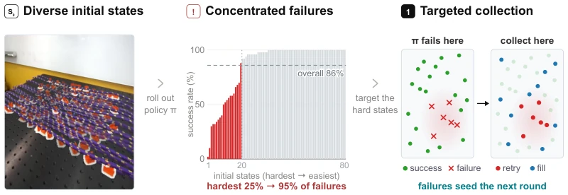
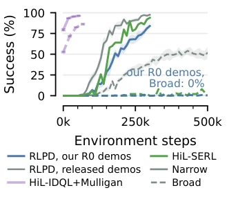
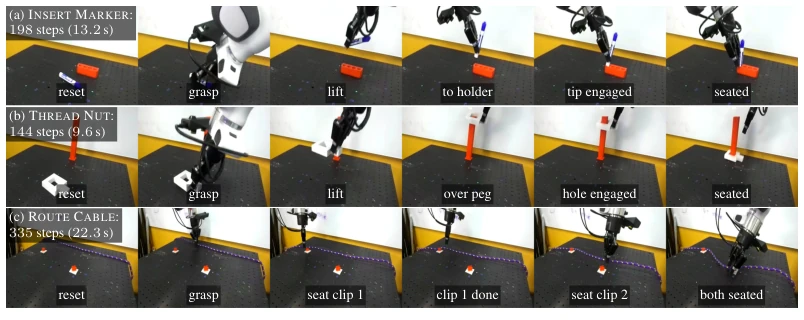
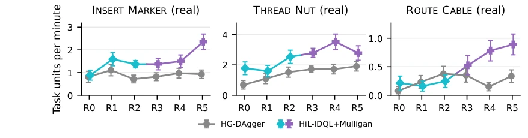
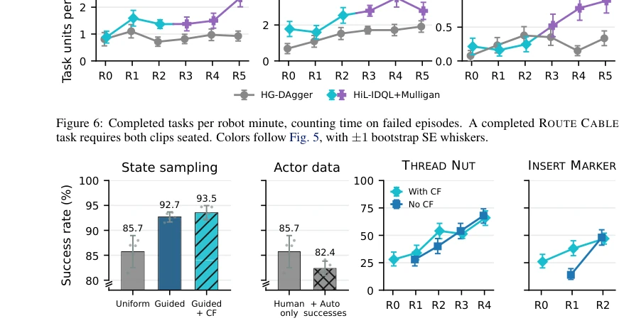
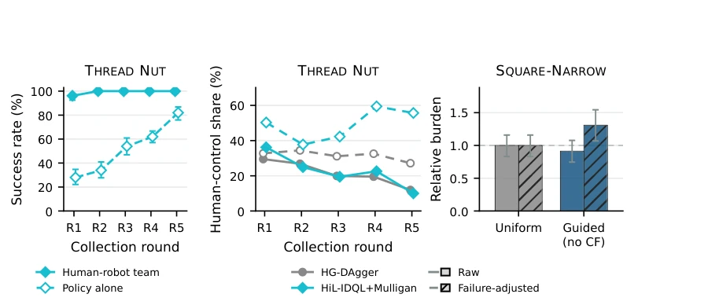
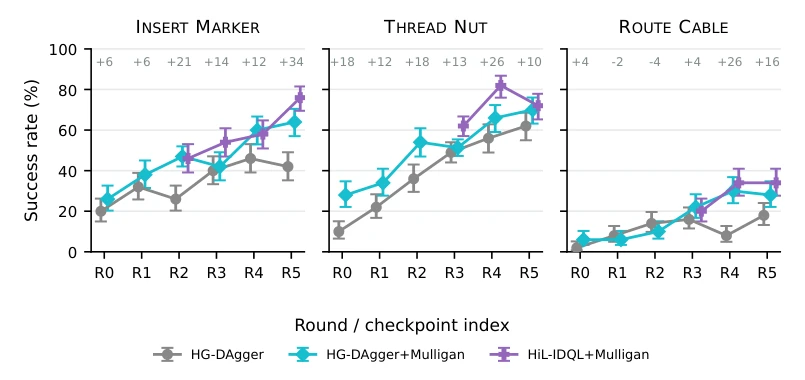
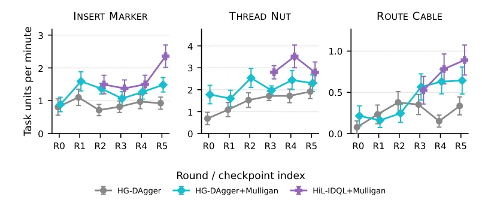
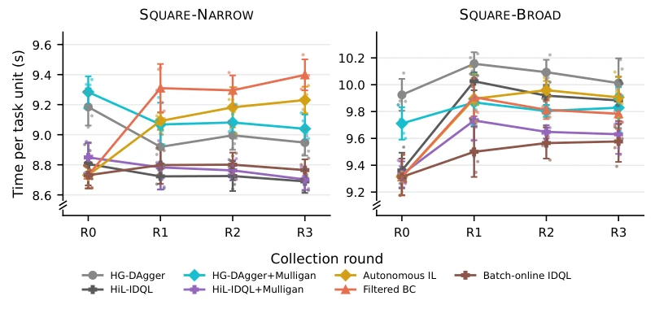
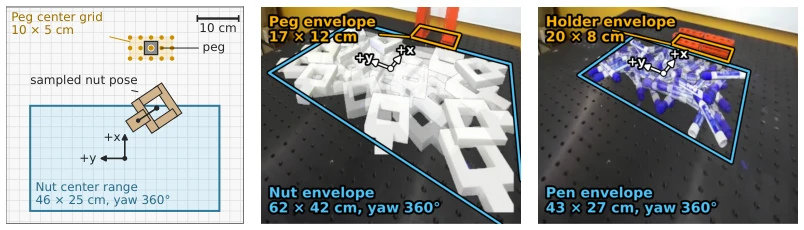

This paper pours cold water on the boring robot data collection: stop wasting operator time with uniform sampling, a 'scattering pepper' approach. Mulligan's core insight is sharp—robot failures often concentrate in a few specific 'pits'; uniform sampling is like randomly walking on a minefield, spending most time circling in safe zones. The authors transform the 'initial state distribution' from a fixed parameter into an optimizable decision variable, a move that is indeed clever. However, this method is essentially an enhanced version of 'get up where you fell', relying on operators to manually reset initial states, which may be somewhat 'unadapted' for fully autonomous deployed robots. Furthermore, although it claims to improve efficiency, it essentially relies on 'human labor' to fill gaps; if operators are tired or perform poorly, the effect may be significantly diminished. Overall, this is a very pragmatic paper regarding 'data collection strategies'. While not particularly 'sexy', it excels in practicality, especially for scenarios requiring high-precision operations.
In the field of embodied intelligence, learning from human demonstrations (Imitation Learning) is the mainstream method for teaching robots new tasks; however, as policy success rates improve, the marginal returns of additional demonstrations drop sharply [1, 6, 7, 8, 9, 10]. Existing 'Human-in-the-loop' (HiL) systems, such as HG-DAgger [12], can correct errors through intervention but typically assume initial states are uniformly distributed. This uniform sampling strategy is extremely inefficient under broad initial state spaces, as research finds that 95% of failures often concentrate in 25% of initial states [1]. This implies operators spend most time supervising robots handling tasks they can already easily complete, while truly difficult 'hard bones' are ignored. Furthermore, existing Reinforcement Learning (RL) methods like HiL-SERL [20] and RLPD [18, 19] perform poorly under broad state distributions and even fail to converge [2]. Therefore, how to maximize improvements gained from each episode under a fixed supervision budget, particularly for high-precision operation tasks, is a critical problem requiring urgent resolution.

Figure 1: Diverse initial states: We study learning in deployment with wide initial-state distributions. Concen- trated failures: Failures are not spread evenly across the initial-state space. Targeted collection: Retry observed failures (red) and fill the rest with the least-explored states (blue), to spend operator time where needed.

Figure 2: RLPD [18, 19] reaches 84% on SQUARE-NARROW but 0% on SQUARE- BROAD; HiL-SERL [20], with interven- tions, ends at 94% and 2%.
Mulligan proposes a performance-guided data collection strategy, the core of which treats 'where to start in the next round' as a decision problem. The overall process is divided into multi-round iterations: each round first evaluates the current policy, then decides the initial state distribution for the next round based on evaluation results, and finally collects data and updates the model. It specifically includes three key modules: First is 'Failure Promotion', where the policy no longer samples randomly but prioritizes selecting specific initial states where the policy failed in the previous round's evaluation for retry. To distinguish error severity, the system sorts by task stage (e.g., grasp failure vs. insertion failure), prioritizing the earliest and most severe failures. Second is 'Coverage Fill'; after retrying failed states, the remaining budget is used to explore unvisited state spaces. Here, the Farthest-point selection algorithm is adopted; based on the collected state distribution, it finds the farthest initial state to ensure the breadth and uniformity of exploration, avoiding local optima. Finally is 'Counterfactual Demonstrations'; when an operator intervenes to correct a failure, if the correction only demonstrates 'how to recover from error' rather than 'how to execute correctly', the operator resets to the same initial state and re-records a complete correct demonstration. This counterfactual data is added to the training set, helping the policy learn missing correct behaviors, not just error correction. At the algorithm level, Mulligan works with two learners: one is Behavior Cloning based solely on human data (HG-DAgger), and the other combines a Value Function (HiL-IDQL); the latter uses all data (including failure trajectories) to train the Critic, and at deployment, it reorders actions via Best-of-N sampling to further improve policy performance.
The authors conducted evaluations on three real-world tasks (INSERT MARKER, THREAD NUT, ROUTE CABLE) and two simulation tasks (SQUARE-NARROW, SQUARE-BROAD), involving a total of 2550 blind test episodes. Baselines include uniform sampling HG-DAgger, HiL-SERL [20], and RLPD [18, 19], among others. The main metrics are autonomous success rate, execution speed, and throughput. Results show that HiL-IDQL+Mulligan achieved a final success rate on real tasks 10-34 percentage points higher than HG-DAgger, and in simulation wide distribution tasks, other methods (such as RLPD) could not even reach 90% success rate, whereas Mulligan could continuously reduce the failure rate. Ablation experiments indicate that the performance-guided sampling strategy significantly improves early performance compared to uniform sampling, while Counterfactual Demonstrations (CF) are particularly crucial in the early stages, bringing over 20% performance improvement. Additionally, the reordering mechanism combined with the value function further consolidates performance in the later stages. Notably, despite adopting targeted sampling, the human-robot collaboration team still completed 98% of the collection episodes, proving that this method does not come at the cost of task completion rate.

Figure 3: The three real-world tasks. Each row is the median-length successful held-out episode of the final- round HiL-IDQL+Mulligan policy from the side camera, with frames at the rungs of each task’s stage ladder (Sec. C.3), not at even intervals. The median round-0 demonstration takes 12.7, 10.1, and 18.6 s. In (b), the policy carries the nut above the camera’s field of view between frames.

Figure 6: Completed tasks per robot minute, counting time on failed episodes. A completed ROUTE CABLE task requires both clips seated. Colors follow Fig. 5, with ±1 bootstrap SE whiskers.

Figure 7: Component ablations in simulation (left two) and the real world (right two). State sampling and actor data on SQUARE-NARROW round 1, with five-seed means, seed dots, and 95% t-intervals (Sec. B.5). Counterfactual demos on THREAD NUT and INSERT MARKER through the last measured no-CF round, with Wilson ±1 SE whiskers. R0 is the shared source actor.

Figure 9: Human burden on THREAD NUT (left, human-control frame share) and SQUARE-NARROW (right, intervention-episode share relative to uniform), raw and divided by the collector’s failure rate. Both panels ex- clude CF demos. Wilson 95% bounds treat the normalization as fixed (all tasks and definitions in Sec. B.9).

Figure 10: Per-arm full-success results for the policies in Fig. 5, with HG-DAgger (grey), HG- DAgger+Mulligan (teal), and HiL-IDQL+Mulligan with critic reranking (purple) as separate series. The top row gives the per-round delta of the policy deployed in the Mulligan campaign over the uniform-sampling HG-DAgger baseline in percentage points. Intervals are Wilson-score one-standard-error (z=1). The ROUTE CABLE panel shows full-episode success for rounds R0–R5, scored on one shared block of 50 initial states.

Figure 12: Throughput on the held-out evaluations: completed task units per robot minute over all evaluation episode time (one bootstrap standard error over evaluation episodes). A task unit is a full episode on all three tasks, and ROUTE CABLE uses all six rounds on its shared block of 50 initial states. Unlike the main-text summary in Fig. 6, this view shows HG-DAgger+Mulligan and HiL-IDQL+Mulligan together wherever both were evaluated. Failed and timed-out episodes spend robot time but produce no units.

Figure 13: Simulation execution speed on the fixed-grid held-out evaluations for SQUARE-NARROW (left) and SQUARE-BROAD (right): mean successful-rollout duration in seconds (env control steps at 20 Hz), averaged over the five training seeds (two-sided Student-t 95% CIs, dots are per-seed means, y-axes are zoomed at the axis break). Series colors and markers follow Fig. 5.
其他图片Other Figures

Figure 4: Left: the THREAD NUT reset-helper card from which the operator places each episode’s objects. The nut center is sampled uniformly over the blue range at any yaw, and the peg is snapped to the orange grid (all three tasks in Sec. E.4). Middle and right: side-camera overlays of boundary and interior reset poses for THREAD NUT and INSERT MARKER, with each object’s envelope, its center range grown by its reach, outlined and labeled. The ROUTE CABLE overlay is in Fig. 1, left.